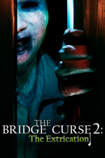

The Bridge Curse 2 The Extrication
Detalles
|  | |
| Tiempo de juego | No Jugado |
| Última actividad | Nunca |
| Añadido | 11/13/2024 0:35:38 |
| Modificado | 11/13/2024 1:05:57 |
| Estado de finalización | No Jugado |
| Librería | Playnite |
| Fuente | PORCHE |
| Plataforma | PC (Windows) |
| Fecha de lanzamiento | 5/9/2024 |
| Puntuación de la Comunidad | 88 |
| Puntuación de la Crítica | 72 |
| Puntuación de usuario | |
| Género | Aventura |
| Desarrollador | SOFTSTAR ENTERTAINMENT |
| Editor | Gamera Games PQube |
| Característica | Cloud Saves Compat. Total Con Mando Logros De Un Jugador |
| Enlaces | Punto de encuentro Discusiones Guías Noticias Página de la tienda PCGamingWiki Logros |
| Tag | Acción y aventura Ambientales Aventura Buena trama Cinematográficos Conspiraciones Drama Exploración Finales múltiples Investigación Misterio Primera persona Sigilo Simulador de caminar Sobrenaturales Supervivencia / Terror Suspense Terror Terror psicológico Un jugador |
Descripción

Trata de escapar con vida en «The Bridge Curse 2: The Extrication», una aventura de supervivencia y terror en primera persona ambientada en la Universidad Wen Hua de Taiwán, conocida por su folclore e historias de fantasmas. Juega como cuatro personajes distintos para evitar y enfrentarte a fantasmas aterradores, resolver complicados acertijos y descubrir una conspiración siniestra... ¿Sobrevivirás a la noche o serás la nueva víctima de la maldición?
Te damos la bienvenida a la Universidad Wen Hua. Comienzan las clases...
Dentro de las tétricas salas de la Universidad Wen Hua, conocida en todo Taiwán por sus espeluznantes historias de fantasmas, el club de cine de la facultad elabora un plan para reclutar miembros nuevos. Un osado grupo de estudiantes organiza la feria del terror dentro del infame edificio encantado Da Ren. Se adentran en las profundidades de la noche para rodar con la intención de resucitar un misterio del campus de hace décadas para la película de terror viral que tienen pensada. Sin embargo, mientras las cámaras graban entre las sombras, la línea entre ficción y realidad se difumina y comienzan a producirse sucesos inexplicables...

Engaña y evita a perseguidores implacables
En las salas envueltas en sombras de la universidad acechan fantasmas formidables. Ahoga el más mínimo gemido y trágate las ganas de gritar, porque el dédalo de estancias amplifica cualquier sonido. Ya no eres uno de los estudiantes. Eres una presa. Tendrás que emplear tu instinto de supervivencia para escapar de los implacables cazadores, empleando a la desesperada sigilo, tácticas y objetos sagrados que desvíen la atención de quienes te dan caza.

Un elenco de personajes memorables
Juega como cuatro personajes distintos: Sue Lian, una decidida reportera que quiere la exclusiva sobre los misteriosos acontecimientos y los tres universitarios atrapados en una pesadilla sin fin. Descubre a personajes memorables mientras recorres cada perspectiva, desde el extrañamente gracioso sargento Huang hasta la escalofriante presencia siniestra de la bailarina demente.

Explora un campus universitario horripilante
Experimenta la evocadora belleza de Wen Hua, una realista universidad taiwanesa. Recorre sinuosos pasillos en los que resuenan las pisadas y explora un laberinto de salas mientras tratas de encontrar la salida de una pesadilla constante. Registra el entorno en busca de pistas vitales y objetos esenciales que contienen la clave para descubrir los misterios que envuelven Wen Hua. Cada objeto cuenta una historia. Tendrás que examinarlos todos minuciosamente, pues podría haber verdades ocultas bajo la superficie.

Resuelve complicados acertijos y descubre una conspiración siniestra
Reúne misteriosas pistas con cuidado y revela artefactos y objetos dispersos por todo el campus para adentrarte en las conspiraciones ocultas en lo más profundo de Wen Hua. Afronta acertijos complejos mientras tratas de liberarte de la enigmática prisión que forman las espectrales salas de la universidad.

Basado en una popular película y secuela de un galardonado juego de terror
The Bridge Curse 2: The Extrication toma la base del éxito de su predecesor y te sumerge aún más en una nueva historia...